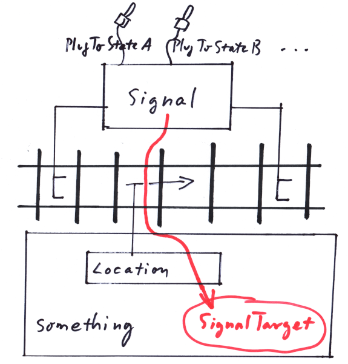

""
-
A Signal is a directed range along the tracks that provides information to be send to a SignalTarget, while moving a Location along the track inside that range and according to the ranges direction. Clearly this can be used in the way modern Linienzugbeeinflussung[1] works, where along a track range time varying information is sent to a train. But also old style signalisation applies, if one takes into account that there always is a range from a pre signal to a main signal in which the conductor of the train is expected to read the meaning of the signal and act accordingly - say to stop in front of the main signal after passing the pre signal. Once the train passed the main signal, its state does no longer apply to the train:
Punktförmige Zugbeeinflussung[2] is only slightly more tricky, since it requires a non zero range, long enough to have the Location not jump over it in one simulation step, given the maximum expected speed:
Range.Length() >= MaxSpeed * MaxSimulationStep;
Note that Signal ranges can not include switches (see Chapter 4) that branch in their direction. So it is best avoided to strech the range of a Signal over any switch at all.
Also there is an important issue with Locations that 'happen to inadvertently roll backwards'. This might seem like an occurence, best ruled out by definition, but with trackjoints in a physical simulation environment, it happens to happen quite often. To guarantee the Location relaying the information from the correct Signals, there has to be supplied a principal direction of the movement which might differ from the direction of the actual movement.